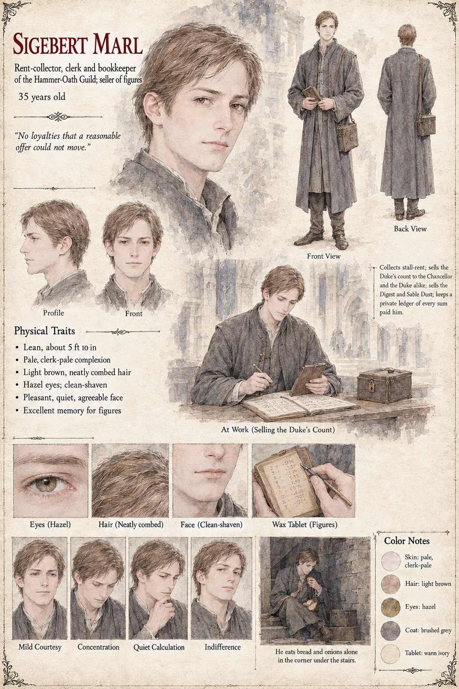

Sigebert Marl
Rent-collector, clerk and bookkeeper of the Hammer-Oath Guild · seller of figures · 35 at the opening, in his seventy-first year at his death
A lean, quiet, pleasant-faced man of thirty-five with an excellent memory for figures and no loyalties that a reasonable offer could not move, who goes through the Low Market at Terce on the ninth of the month with a wax tablet and two bored guardsmen, collecting the Guild's stall-rent as a man reads the weather. He enters Ansbert's empty hand in the tablet and, at home, beneath the smith's name in a private ledger kept in a locked box that no one at the Guild has ever seen, a note that reads buys odd goods in place of rent; he makes such notes about a great many people, and very occasionally, years later, one turns out to be worth more than the rent. He buys a Low Forge sword through a cousin for five marks, tests it over a night and a day with a hammer and a vice, finds nothing, locks the sheet in the box with the others, and decides over a supper of bread and onions that the Guild is about to become very cheap and that the time to sell it is before the price is known. He has already sold information to three masters, a duke's steward and the abbess of a convent that owns a vineyard.
After that the case is largely his invoices. He strikes Wolfram from the Guild's rolls with a single stroke of his pen on the first of Brayen. In the first week of Mavren of the second year he sells the Duke of Tarnwald's steward, Odilo, his own tally of eighty-nine swords for sixty marks, and on the eighth he sells the Chancellor Ricbert the same figure for forty, entering both under Arithmetic, Resale of; after the Ordeal he sells each of them a four-page Digest of the Eleventh Clause for a mark. For forty marks he arranges for two of the steward's clerks to go over the old wall behind the forge, for sixty he follows the hawker as far as the river-gate and no farther, and for forty from the Countess's steward he sells the Duke's order to take the Low Market, a price he considers handsome for news the clerks had already begun to whisper in the taverns. When the Guild adjourns he sells the Hammer-and-Oath die-block, the Proof-Post and the ash-hoop to a nailer of the Low Market for eleven pence a pound, as scrap. The day the sack is hung in the Hall he goes home to his bread and onions and opens a new ledger headed Relics, Dealing In, and in the fourth year sets up a trestle at the Hall door selling the Hall's sweepings, a penny a pinch, as the Sable Dust. He dies rich in his bed in his seventy-first year, buried by the Order at the Crown's expense since nobody else can be found who will admit to having known him, and the box beneath the bed holds one ledger of every sum anyone ever paid him, closed beneath a column that runs to nine thousand marks with the note Cost of the war, to me: nil.
The manuscript gives his age, his lean quiet pleasantness, his memory for figures and his bread and onions; the sheet's 5 ft 10 in, clerk-pale skin, neatly combed light brown hair, hazel eyes, clean-shaven face, grey coat and satchel-box are its own. Its pull-quote, No loyalties that a reasonable offer could not move, is lifted from the manuscript's own wording, and its summary line lists what he sells, the Duke's count, the Digest and the Sable Dust, beside a private ledger of every sum paid him; its panel of him eating bread and onions alone in the corner under the stairs follows a scene at the Three Sheaves on the night of the King's death. Its expression panels run Mild Courtesy, Concentration, Quiet Calculation and Indifference.
“Cost of the war, to me: nil.”
Appears In

Related Subjects


Related Records

In the Proof-Hall the Guildmaster Gundobad Rotger stares at the bright crescent bitten into the steel face of the Guild's mallet while the sword in the Proof-Post is still singing; Ansbert stands rigid in his too-tight coat, Higaide looks at the floor behind him, and Sigebert Marl holds a wax tablet at the lectern.